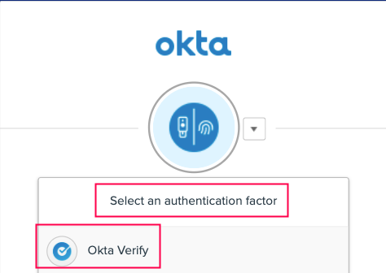
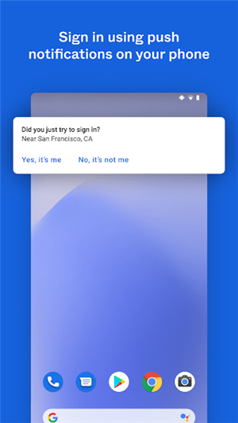

用了 Okta Verify 三年才挖出的四个隐藏功能
从蓝牙换机迁移到生物识别失灵补救、从设备健康警告拆解到强制更新机制——四个官方不宣传但真能救场的冷门操作。
你以为 Okta Verify官网 就是个生成六位数验证码、点推送"是"的认证器？我以前也是这么想的。直到上个月换手机时偶然点开账户详情页，才发现藏在几层菜单之下的东西远不止这些。
Okta Verify文档 写得不算晦涩，但很多真正好用的功能埋得太深，官方既不弹窗提示也不做新手引导——属于那种"知道的人私下用、不知道的人三年都碰不到"的级别。这篇把我翻了个底朝天挖到的几个干货记下来，每一个都有"这玩意儿原来还能这样"的惊喜感。
一、蓝牙导出导入：换机居然不需要走服务器
换手机是每个认证器用户最慌的时刻。我以前的流程是：旧机卸载 → 新机装完官方下载的包 → 打开应用 → 看提示让我去公司 IT 帮助台补注册 → 排队等。整个过程能耗掉大半天。
直到发现 Okta Verify 9.0.0 版本之后加了一个Export/Import account 的入口——在账户详情页里，藏得真深。旧机点 Export，屏幕会同时弹出一个二维码和一个 8 位字母数字码；新机装好应用后点 Import，扫码就行。扫不上还有手动输码的退路。全程蓝牙直连，账户数据根本不过服务器，几分钟完成。
配对确认那步设计得特别讲究：新机显示一个 6 位 PIN，你得把这个 PIN 输进旧机里才能完成配对——官方特意加粗了警告说"绝不要输别人给你的 PIN"。双向确认，安全性这块没得挑。
哪些账户能一起带走？组织账户（FastPass）肯定没问题；iOS 端 9.70.0 起还支持第三方 TOTP 账户（比如 GitHub 的动态码）跟着迁，但 Android 端这块还没开放——这一点 Android 用户得注意，第三方码别指望蓝牙带过去，旧机上导出的时候记得先手动记一份种子。

我上个月换 Pixel 9 Pro 就是靠这个流程，从旧 Pixel 6 到新机迁移所有账户只花了三分钟，连 IT 的面都没见着。
二、生物识别失效后的补救通道：不是只有重装一条路
"换了屏之后指纹就再也过不去了"——应用商店评论里这类抱怨我见过不下二十条。以前我也以为这种情况只能找 IT 重置账户，直到有一次自己删了个指纹后推送验证开始抽风，才摸清楚它的补救逻辑。
生物识别失灵大多不是应用坏了，而是系统侧的凭据变化后，应用和设备的确认状态没对上。正确的处理路径有四步：
先确认系统里的生物识别还活着——系统设置里能录入、能测试，说明硬件没问题；录不上的话是硬件级故障，应用侧无解，直接启用口令/密码作为替代。
然后去账户详情页关了再开一遍锁屏确认和生物识别确认——这个开关藏在安全区里，关掉再开等于让应用和设备的当前凭据重新对齐。
还不对就按应用里的补救提示走——账户详情页会冒出"开启锁屏确认""启用生物识别确认"这类黄色提示条目，点进去按指引跳到系统设置逐条补，补完回到应用里警告自动消失。
最后，如果生物识别彻底没了，登录会自动回退到设备口令（PIN 或密码）——只要 FastPass 启用了口令回退，这一条始终是你的兜底。
有个社区高频坑值得提：生物识别变化后，验证请求可能反复弹出"是不是你"的确认，卡在死循环里。遇到这种情况别慌着重装，先在系统设置里把生物识别状态稳定下来（重录或干脆关掉），再打开应用——应用重新初始化时会重新评估设备状态，大多数时候能自动恢复。真不行才重启手机。
三、设备健康警告：黄色不等于账号废了
账户详情页突然冒出黄色警告，或者登录时跳出来"设备不满足安全要求"——这是组织的设备保障策略在起作用，不是你的账号被封了。
管理员在登录策略里定义了设备必须满足的安全条件：锁屏、生物识别、磁盘加密、Root 状态、系统版本……Android 端检查项里还包括硬件密钥库和是否受管。每一条检查没通过，账户详情页就挂一条对应的警告。
处理套路特别固定：点进警告条目 → 按指引跳到系统设置补齐 → 回应用里确认警告消失。别对着黄色警告发懵，它不是诊断报告，是操作清单。几个高频场景的具体做法：
- "开启锁屏" → 系统设置里设锁屏密码/PIN——这是其他大多数检查的前置；
- "启用生物识别" → 先设锁屏，再录指纹/面容；
- "加密设备" → 安卓现代系统一般默认加密，提示出现多半是老设备或刷过机的机器；
- "设备不受管 / 使用受管设备" → 策略要求公司管理设备，个人设备无解，找 IT；
- "越狱/Root" → 安全红线，恢复原状才能过，没有变通空间。
补齐之后警告还没消失怎么办？等一会儿——应用和服务端要重新评估状态，同步有延迟。或者确认你改的是策略要求的那项，别策略要"生物识别"你只设了锁屏还抱怨不生效。
我见过最搞笑的场景：有人看见"加密设备"的警告就慌了，跑去 IT 申请新设备，结果 IT 让他在设置里点一个按钮就解决了——Android 13 之后大部分机型磁盘加密默认开启，但刷过第三方 ROM 的机器会把加密状态报告丢失，重新加密只需要重启一次。
四、强制安全升级：官方藏着的一个硬闸
应用商店里更新提示弹窗你肯定点过"稍后再说"。大多数时候真能拖，但有一类更新你拖不动——安全事件强制升级。
官方的说明写得很简短：为维护服务安全，官方可自动提示运行易受攻击版本的用户先更新应用再恢复访问。这个控制由官方直接管理，管理员都改不了。Android 端 9.16.0 版本的发布说明里明确记录过这一机制的上线。
长期不更新的实际风险我总结了三个层面：
第一，强制升级一旦触发，旧版直接被拦在登录门外——而且往往赶在你最需要登录的时候，周一早上赶项目汇报、出差在外要查系统权限这类场景最容易撞枪口。
第二，官方修复过的崩溃和兼容问题（比如设备健康页修复崩溃、32 位设备崩溃）在旧版上会一直陪着你的机型，别人升级之后用得好好的功能，你在旧版上就是打不开。
第三，蓝牙迁移这类流程改进要求两端都升到新版本——旧机版本不够的时候，新机的 Import 按钮直接灰掉，换机迁账户的路径被掐断，又得回到找 IT 的老路。
正确的更新姿势没什么花活：手机端一律走应用商店更稳妥，别信第三方渠道的安装包（签名和来源都不可控）；升级前在设置页看一眼当前版本号；正常的应用内更新不会破坏本地账户，会清账户的是卸载重装和数据清理，别搞混。

一个别踩的坑：FastPass 是蓝牙迁移和生物识别的共同门槛
前面说的蓝牙迁移有个前提叫 FastPass 已启用，生物识别确认也依赖 FastPass 的口令回退——这两个功能底层其实是一条链。如果账户没有 FastPass，蓝牙迁移根本做不了，生物识别失灵后也没有口令兜底。
FastPass 由组织管理员为账户启用，个人没法主动开启。所以在用前面那些功能之前，先去账户详情页确认一下 FastPass 状态，显示已启用就稳了，显示未启用就联系管理员。别等真要换机了才发现迁不了。
Okta Verify 藏得真深的功能不止这四个，但这几个是我用过之后觉得最能直接帮到人的——换手机、验证失灵、登录被拦，这三种场景每个人迟早会碰到一次。把这些冷门操作记下来，下次遇到就不会慌着找 IT 等排队了。本文涉及的功能细节整理成了文档，放在 GitHub、Gitee、GitCode 三个仓库，国内访问优先选 Gitee 或 GitCode。